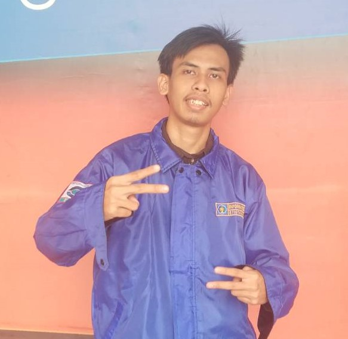
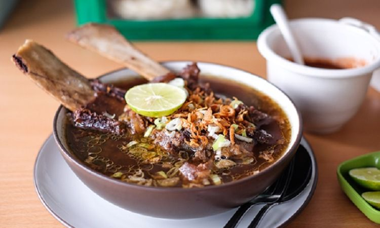
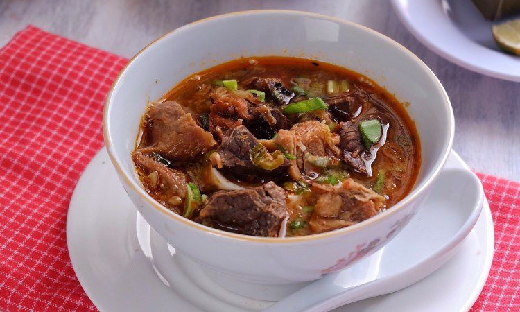
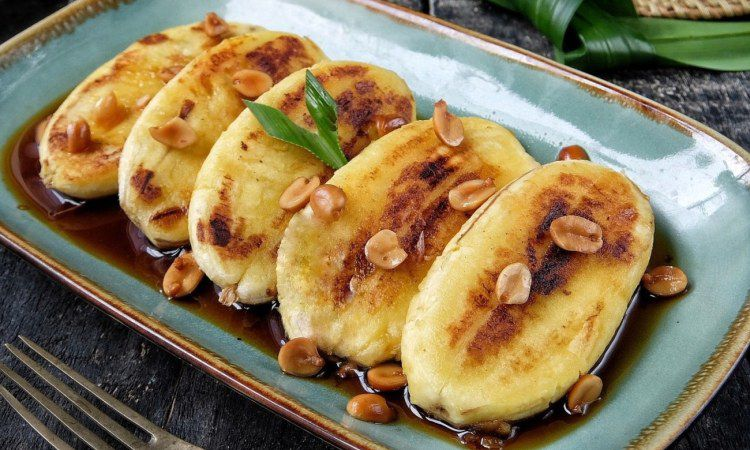
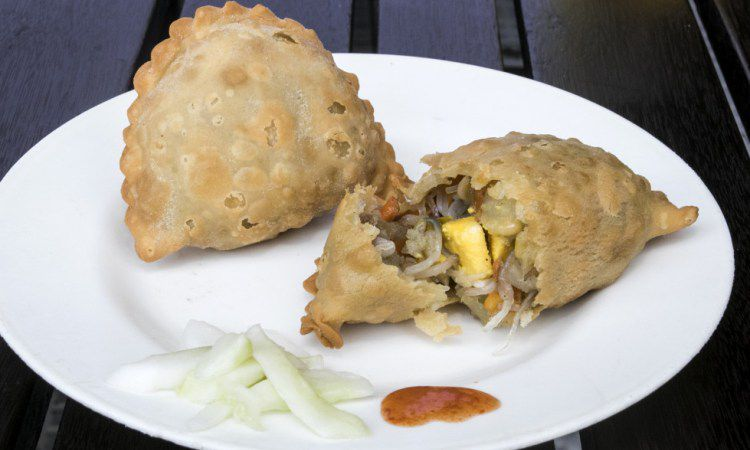

Profile
 Name : Muhammad Rivadhli Purnomo
Date of Birth : Makassar, 16 Agustus 2000
Profession : Mahasiswa
Institusi : Institut Teknologi Sepuluh Nopember
No : 082348149321
Hometown
Kota Makassar (Bahasa Makassar: ᨀᨚᨈ ᨆᨀᨔᨑ, transliterasi: Kota Mangkasara'; dari 1971 hingga 1999 secara resmi dikenal sebagai Ujung Pandang) adalah ibu kota provinsi Sulawesi Selatan. Makassar merupakan kota metropolitan terbesar di kawasan Indonesia Timur dan pada masa lalu pernah menjadi ibu kota Negara Indonesia Timur dan Provinsi Sulawesi. Makassar terletak di pesisir barat daya Pulau Sulawesi dan berbatasan dengan Selat Makassar di sebelah barat, Kabupaten Kepulauan Pangkajene di sebelah utara, Kabupaten Maros di sebelah timur dan Kabupaten Gowa di sebelah selatan.
Menurut Bappenas, Makassar adalah salah satu dari empat pusat pertumbuhan utama di Indonesia, bersama dengan Medan, Jakarta, dan Surabaya. Dengan memiliki wilayah seluas 175,77 km² dan jumlah penduduk lebih dari 1,5 juta jiwa, kota ini berada di urutan kelima kota terbesar di Indonesia setelah Jakarta, Surabaya, Bandung dan Medan. Secara demografis, kota ini tergolong tipe multi etnik atau multi kultur dengan beragam suku bangsa yang menetap di dalamnya, di antaranya yang signifikan jumlahnya adalah Suku Makassar, Bugis, Toraja, Mandar, Buton, Jawa, dan Tionghoa. Makanan khas Makassar yang umum dijumpai di pelosok kota adalah Coto Makassar, Roti Maros, Jalangkote, Bassang, Kue Tori, Palubutung, Pisang Ijo, Sop Saudara dan Sop Konro.
Food
Each region in Indonesia has its own uniqueness and uniqueness that makes it a distinctive feature of each region. Like Makassar which is famous for its delicious soup. Common foods found in remote areas of the city are Coto Makassar, Roti Maros, Jalangkote, Bassang, Tori Cake, Palubutung, Ijo Banana, Sop Saudara and Sop Konro.
1. Konro

Konro is a traditional food from Makassar made from beef or beef ribs. These ingredients are boiled using special spices such as tamarind water, cinnamon and other ingredients. This konro can also be cooked in soups with lots of spices. The color is brownish that you get from kluwek with a strong aroma. This food has a delicious spicy taste especially when accompanied by other side dishes.
2. Coto Makassar

This one food is so popular that you can find it in a number of cities in Indonesia and not only in Makassar. Soto Makasar uses beef as the main ingredient which is also equipped with beef offal. The broth consists of special spices with ground fried peanuts. One portion of Coto Makassar with burasa or ketupat is even added with tauco sauce which makes it even more delicious.
3. Pisang Epe

Banana is indeed a fruit that can be created in many ways, from frying, roasting to boiling it into compote. In the city of Makassar, there is a typical food made from processed bananas, known as banana epe. These bananas are cooked by roasting half-cooked which is then pressed until flattened. Pisang Epe is then doused with brown sugar sauce with a variety of tempting toppings.
4. Jalangkote

At first glance, Jalangkote is similar to pastels except that the skin is thinner. The filling is also different from pastels, consisting of potatoes, bean sprouts, carrots and laksa. The skin is also crisper and tastier because there is additional coconut milk in the ingredients. Jalangkote Makassar is a popular snack that you can get at several cafes at affordable prices.
Tourist
Modern Makassar has many tourist attractions that are used for entertainment purposes for the people of Makassar and for tourists from other cities and countries. One of them is the most popular of the people of Makassar
Losari beach

For those of you who like adventure to various Indonesian tourist destinations, you must have heard about Losari Beach. This beach is located in the western part of the city of Makassar, South Sulawesi Province.
On this beach, all residents and tourists in the city of Makassar pour out in one place to enjoy its beauty. Yes, this beach is very attractive.
Various kinds of tourist activities can be done in a place which is only 20 km from Sultan Hasanuddin airport.